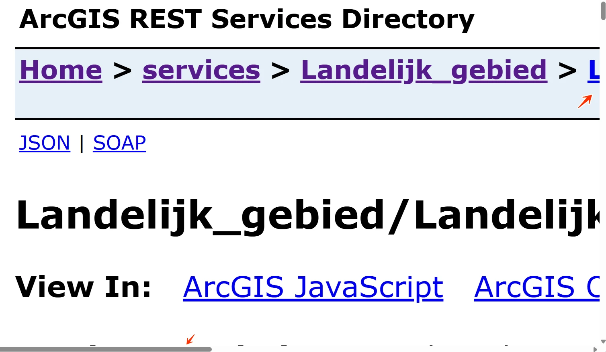

#1 - Geen manier om blokken met herhaalde inhoud over te slaan
De website heeft geen manier om blokken met herhaalde inhoud over te slaan. Er is geen skiplink, er zijn geen landmarks en er is geen goede koppenstructuur als alternatief voor een werkende skiplink.
User story
Ik gebruik de website met een toetsenbord en een schermlezer. Als ik een pagina open, moet ik eerst door elk menu en elke banner voordat ik bij de hoofdinhoud kom. Ik verwacht dat ik direct naar de hoofdinhoud kan springen zonder eerst alles te hoeven doorlopen.
Oplossing:
Gebruik een van deze oplossingen:
- een werkende skiplink (geschikt voor alle bezoekers);
- landmarks;
- een goede koppenstructuur.
#2 - Bij 400% zoom verschijnt een scrollbalk
Wanneer de website wordt bekeken op een schermresolutie van 1280 bij 1024 pixels en wordt ingezoomd tot 400%, verschijnt er een scrollbalk. Horizontaal scrollen is niet toegestaan, ook niet wanneer de viewport is ingesteld op of ingezoomd tot 320 CSS-pixels breed (voor verticale inhoud) of 256 CSS-pixels hoog (voor horizontale inhoud). Zorg dat de tekst binnen het scherm past. In beide richtingen scrollen is alleen toegestaan als dat echt nodig is voor de betekenis of het gebruik van de inhoud. Uitzonderingen zijn tabellen, betekenisvolle afbeeldingen en kaarten; die moeten leesbaar blijven, dus scrollen binnen deze elementen is toegestaan.

User story
Ik zoom in tot 400% om de pagina te lezen. Als ik inzoom, verschijnt er een horizontale scrollbalk en moet ik op elke regel heen en weer scrollen. Ik verwacht dat de tekst automatisch binnen de breedte van mijn scherm past.
Oplossing:
Controleer of horizontaal scrollen nodig is. Zo niet, zorg dan dat horizontaal scrollen niet mogelijk is bij inzoomen.
#3 - Een deel van de inhoud staat in een andere taal, maar er is geen taalcode toegepast
Op alle pagina's staat tekst in een andere taal (Nederlands) zonder taalcode (nl), bijvoorbeeld in de broodkruimels, "Landelijk_gebied" en andere. Hierdoor passen schermlezers de uitspraakregels van de hoofdtaal toe, waardoor de anderstalige tekst mogelijk verkeerd wordt uitgesproken.
User story
Ik lees de website met een schermlezer. Als ik een zin in een andere taal tegenkom, spreekt de schermlezer die met de verkeerde klanken uit. Ik verwacht dat de schermlezer elke taal met de juiste uitspraak voorleest.
Oplossing:
Voeg een lang-attribuut met de juiste taalcode toe aan het element dat de anderstalige tekst bevat. Voeg bijvoorbeeld aan Nederlandse tekst lang="nl" toe.